Mit dem Fischer Lizenz Manager soll ein Fischerverein seine Lizenzen (Fischereikarten) Online
verwalten können
Mit dem Manager lassen sich Mitglieder erfassen, neue Lizenzen erfassen und die Fangstatistik
Online führen.
Zudem können diverse Excels generiert werden z.B. von den Mitgliedern, allen Lizenzen sowie eine
Jahres Fangstatistik
Beschreibung:
Die Applikation lässt sich an den jeweiligen Fischerverein anpassen.
Es gibt eine Startseite mit Informationen über den Eingeloggten User, die Fischerverein Adresse,
Schonzeiten und Mindestmasse der Fische sowie Fischereivorschriften
In der Rubrik Lizenzen, kann der Eingeloggte User all seine Lizenzen einsehen sowie deren
Ablaufdatum
In der Rubrik Statistik kann der User seine Fangstatistik Online führen.
Die Rubrik Aufseher ist nur für User mit dem Recht Aufseher. Hier können die Lizenzen der Mitglieder
kontrolliert werden sowie deren Fangstatistiken.
Die Rubrik Admin ist nur für User mit Administrationsrechte. Hier kann ein Administrator den
Fischerverein verwalten, neue User und Lizenzen hinzufügen.
Funktionen:
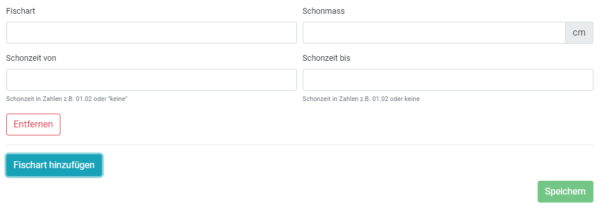
In der Rubrik Fische und Schonzeiten können beliebig viele Einträge erfasst werden.
Jeder Fisch, der erfasst wird, hat einen Namen, eine Mindestmass, und eine Schonzeit. Es können bei
Mindestmass und Schonzeit auch keine Eingetragen werden, falls diese Fischart dies nicht besitzt.
Anhand dieser Einträge werden auf der Startseite alle Fische und deren Schonzeiten angezeigt.
Zudem werden auch all diese Fischarten bei einem neuen Statistik Eintrag automatisch zur Auswahl
stehen
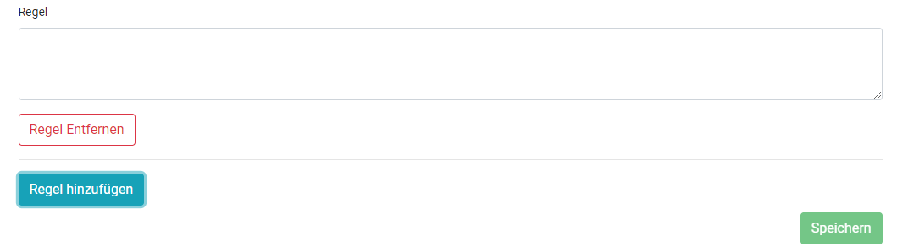
In der Rubrik Regeln und Vorschriften können eigne Regeln erfasst werden, welche auch direkt auf
der Startseite angezeigt werden. Hat der Verein bereits eine Regel als PDF oder auf der Webseite
veröffentlicht kann auch dieser Link dort eingetragen werden.
Mit Klick auf Regel hinzufügen kann eine neue Regel definiert werden.
Eine Regel kann jederzeit entfernt werden
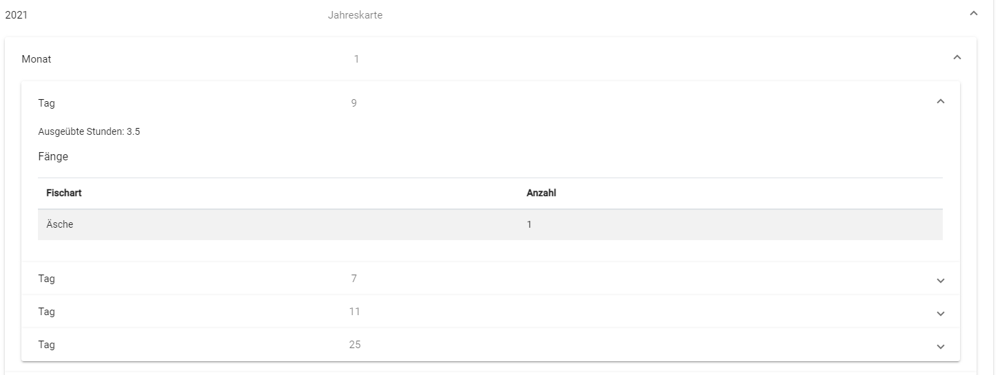
In der Rubrik Statistik werden alle Statistiken in einer Tabelle angezeigt.
Mit Klick auf das Icon in der Spalte Details kann jede Statistik im Detail betrachtet werden.
In der Detail Ansicht kann jeder Monat und jeder Tag der Statistik einzeln betrachtet werden.
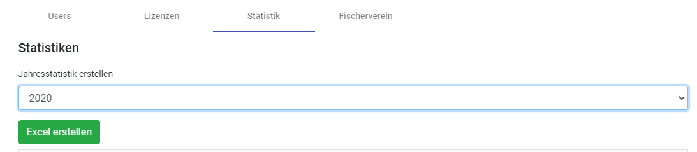
Mit Klick auf das Eingabefeld bei Jahresstatistik erstellen erhält man automatisch eine Auswahl der
letzten 5 Jahre.
Mit klick auf Excel erstellen wird das Excel automatisch für das gewünschte Jahr erstellt und
heruntergeladen.
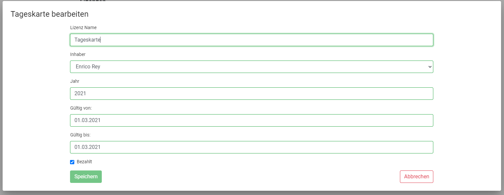
In der Rubrik Lizenzen hat ein Administrator eine Übersicht über alle ausgestellten Lizenzen sortiert
nach Jahr und Ablauf der Lizenz.
Mit Doppelklick auf eine gewünschte Lizenz kann diese bearbeitet werden.
Eine Lizenz kann auch jederzeit über den Button in der Tabelle löschen gelöscht werden.
Mit Klick auf Lizenz hinzufügen kann der Administrator eine neue Lizenz für ein User ausstellen.
Alle registrierten User stehen automatisch zur Auswahl, es wird auch direkt eine neue Statistik
erstellt für die neue Lizenz.
Mit Klick auf Excel Export in der Tabelle wird automatisch ein Excel heruntergeladen mit allen
erstellten Lizenzen.
In der Rubrik Users hat ein Administrator überblick über alle Registrierten Benutzer der Plattform.
In der Tabelle findet er alle Angaben zu dem Benutzer inklusive Adresse im Untermenu der Tabelle.
Mit Doppelklick auf einen User kann der gewünschte User bearbeitet werden.
Alle Daten des Users können angepasst werden. Wird der User auf Inaktiv gesetzt ist dieser von der
Plattform gesperrt und kann sich danach nicht mehr Einloggen.
Mit Benutzer hinzufügen kann der Administrator einen neuen Benutzer erstellen. Nur ein
Administrator kann einen neuen Benutzer erstellen und auch die Rechte auf der Plattform vergeben.
Mit Klick auf Excel Export lässt sich ein Excel herunterladen mit allen Benutzern und deren Adresse.
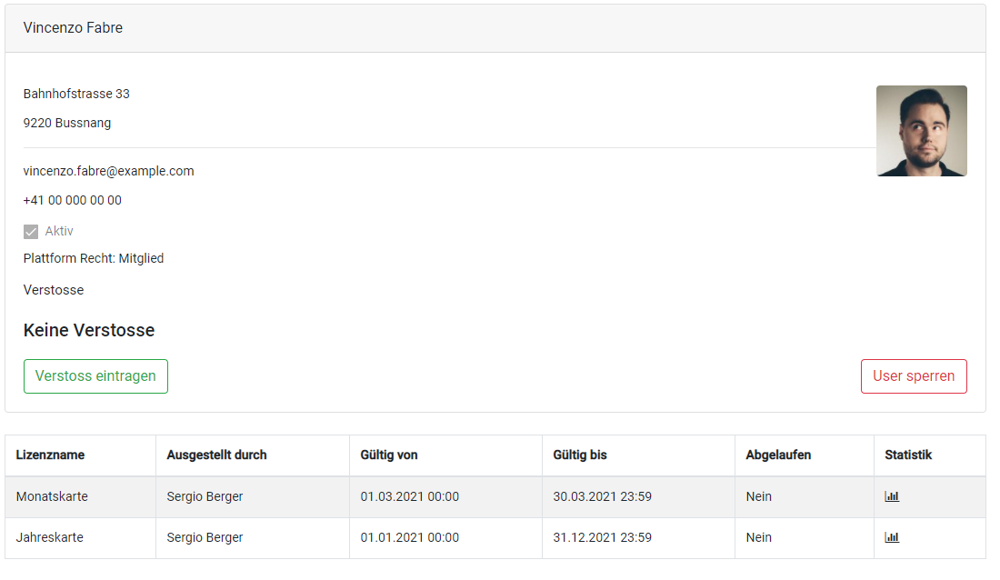
Die Rubrik Aufseher kann jeder Administrator auch einsehen oder alle Benutzer, welche das Recht
Aufseher zugeteilt wurde.
Ein Aufseher kann mit klick in das Feld Users einen bestimmten Benutzer suchen, welcher kontrolliert
werden soll.
Es werden alle möglichen Benutzer der Plattform in einem Dropdown Menu angezeigt. Der Aufseher
kann auch einfach einen Benutzer mit Eingabe des Namens suchen und alle Benutzer werden
automatisch gefiltert.
Ist ein Benutzer gefunden und ausgewählt werden dem Aufseher nun alle Details des Benutzers
angezeigt mit Adresse und einem Bild.
Dem Aufseher werden nur Aktuelle Lizenzen des jeweiligen Jahres angezeigt.
Ältere Lizenzen werden hier nicht dargestellt
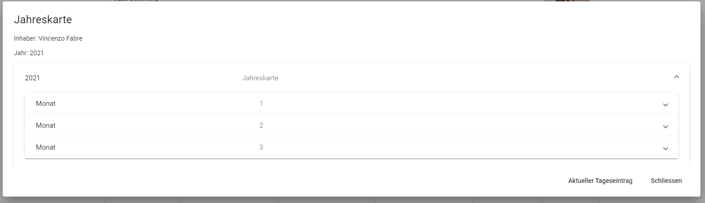
Mit Klick auf das Detail Icon in der Tabellenspalte Statistik wird für die gewünschte Lizenz die Statistik
angezeigt.
Mit Klick auf Aktueller Tageseintrag wird die aktuelle Statistik mit Fang, Anzahl und ausgeübte
Stunden für den aktuellen Tag angezeigt, sofern ein Eintrag vorhanden ist.
Ansonsten wird eine Warnmeldung angezeigt damit der Aufseher sofort sieht das kein aktueller
Eintrag vorhanden ist.
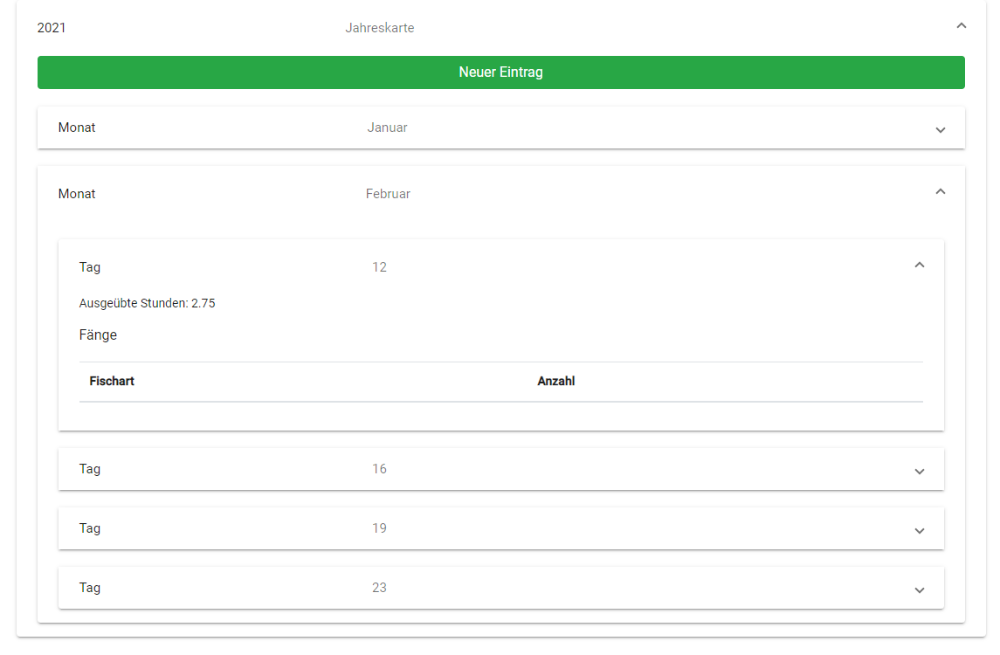
In dieser Rubrik sieht der Benutzer all seine Statistiken zu den Lizenzen, welche er besitzt.
Mit Klick auf die Lizenz kann der Benutzer all seine Einträge in der Statistik ansehen.
Die Einträge können nicht bearbeitet werden damit eine Manipulation der Fangstatistik nicht möglich
ist.
Mit Klick auf Neuer Eintrag kann der Benutzer einen aktuellen Tageseintrag in die Statistik eintragen.
Der Tag und Monat können nicht bearbeitet werden, da nur ein aktueller Tageseintrag in die Statistik
möglich ist.
Mit Klick auf Fang hinzufügen kann der Benutzer eine Fischart und Anzahl Eintragen.
Unter Fischart stehen alle Fischarten zur Verfügung, welche der Verein erfasst hat.
Wurde eine Fischart gefangen, welche nicht auf der Liste stehen kann, der Benutzer „Andere“
auswählen und muss diese dann in einer neuen Spalte Eintragen.
Die Fischart wird nicht in Liste übernommen aber in der Statistik eingetragen.
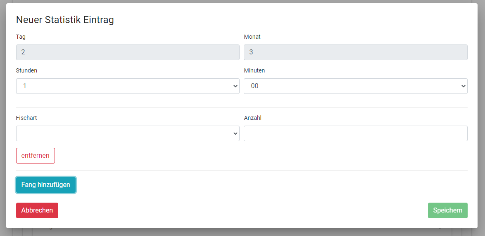
Werden weitere Fische gefangen kann der aktuelle Tageseintrag jederzeit bearbeitet werden.
Es können die Stunden angepasst werden, die Anzahl gefangener Fische oder auch weitere Fänge
hinzugefügt werden.
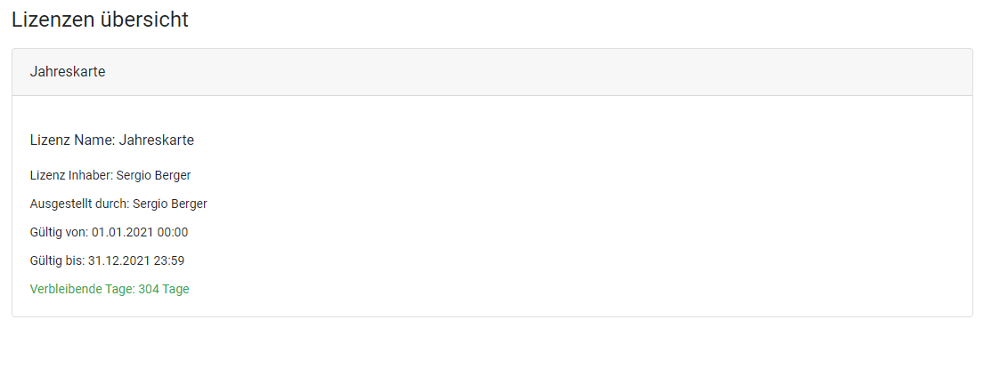
In der Rubrik Lizenzen hat der Benutzer eine Übersicht über alle Lizenzen, die er verfügt.
Es werden alle Lizenzen des aktuellen Jahres anzeigt.
Ältere Lizenzen werden in einer separaten Sparte Alte Lizenzen angezeigt.
Der Benutzer sieht all seine Lizenzen und wie lange diese noch gültig sind.
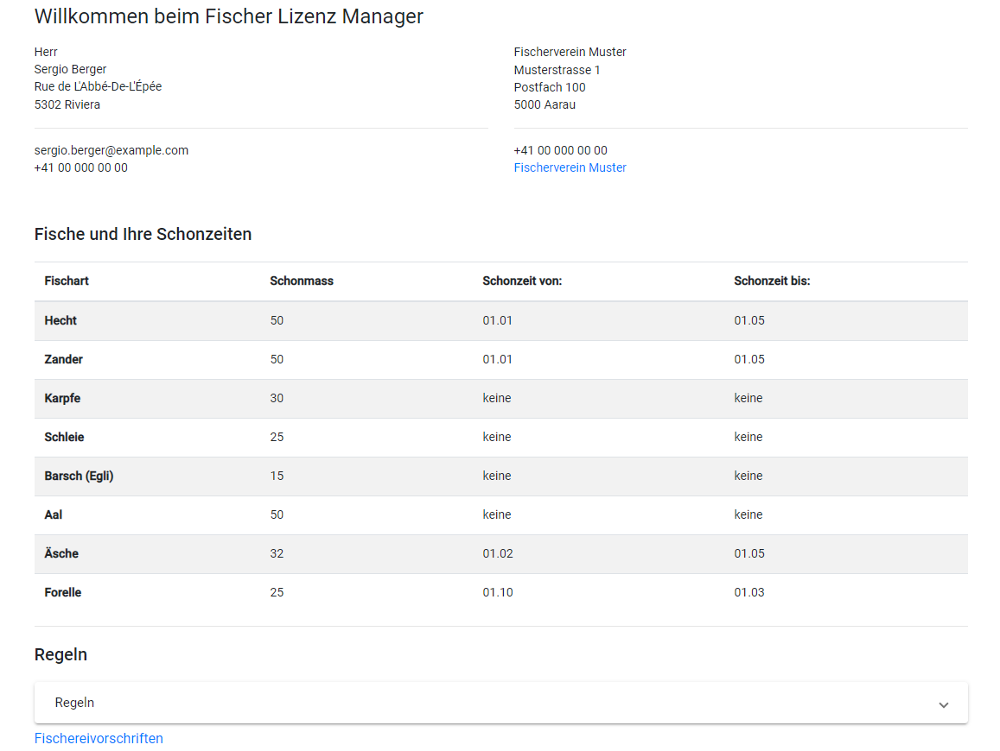
Die Home Seite ist die Startseite der Plattform.
Hier sieht der Benutzer seine Adresse sowie die Adresse des Vereins.
Mit dem Link in der Vereinsadresse kann der User direkt auf die Homepage des Vereins wechseln,
sofern diese durch den Administrator hinterlegt wurde.
Es werden auch in einer Tabelle alle Fischarten, deren Schonzeiten und Schonmasse des Vereins
anteigt.
Diese Einträge werden automatisch angepasst wen ein Administrator Änderungen vornimmt.
Im Unteren Bereich kann der Benutzer die Vereinsvorschriften nachlesen oder auf eine Externe Seite
gelangen, falls diese von einem Administrator hinzugefügt wurde.
Verwendete Technologien:
Angular
Bootstrap
.NET Core 5
MSSQL
Umsetzung:
Das Frontend wurde mit Angular programmiert und Bootstrap verwendet für die Darstellung
Für das Backend wurde eine RESTFull API mit .NET Core 5 in C# programmiert. Die REST wurde komplett asynchron programmiert
Die Daten werden in einer Microsoft SQL-Datenbank gespeichert.
Demo Version
Um die Applikation zu Testen wurde eine Demo Version veröffentlicht.
In der Demoversion sind einige Features nicht möglich.
Mit den drei Testuser Admin, Aufseher und User kann man sich in die Applikation einloggen und die verschiedenen Rollen testen.